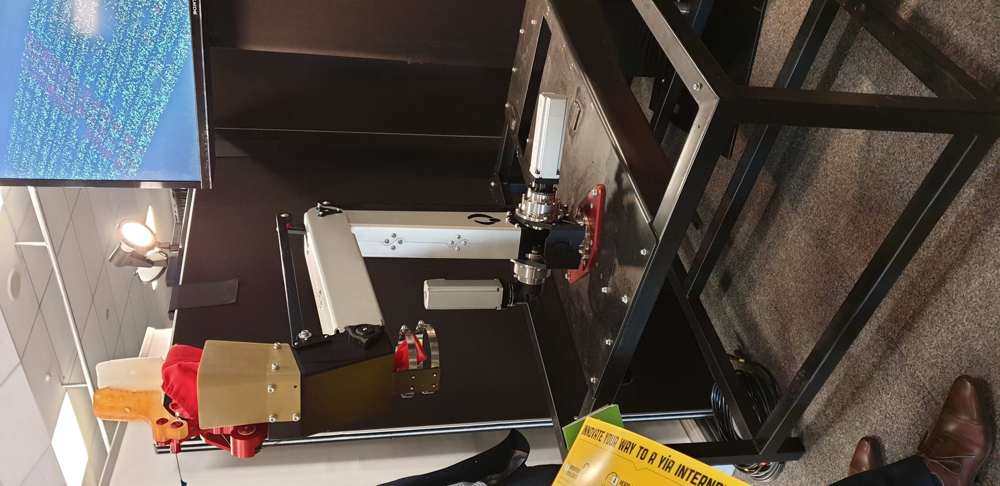

This page is about innovation of technology in horticulture
Some pictures
Plant tech lunch
Date: 23/05/2019
Programed to pick kiwi fruit

Plant tech lunch
Date: 23/05/2019
Use to fly above the patch and take a photo of the patch
How does this help the farmers
It makes it a little easier for the farmers. it helps in different ways like monitoring crops, soil, pests and weather conditions
technology can help the farmer in many different ways all its doing is making it easier to do
What is coming
Panasonic is a company that is making a robot that harvest tomato
Deepfield robotics is starting up a company which is funded by bosch and they are creating a new way of getting rid of weeds and this field vehicle called
bonirob can distinguish crops and weeds or any unwanted plants, deepfield robotics are also developing a strawberrys, tomato and asparagus
production.